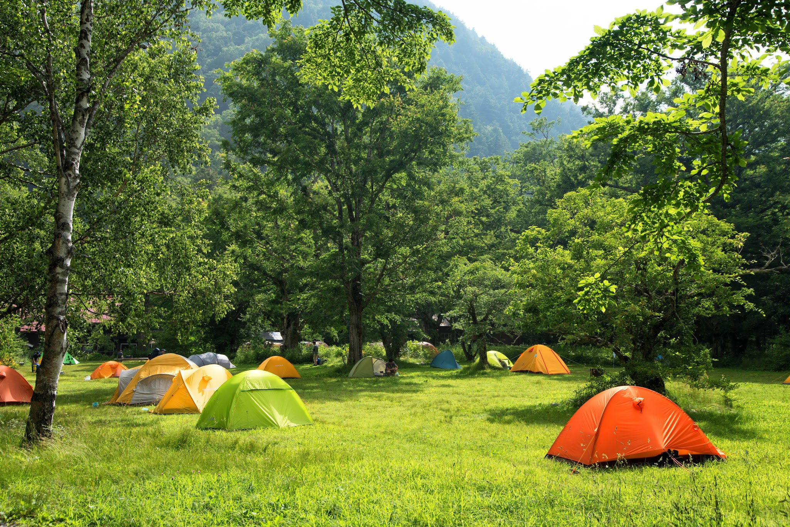
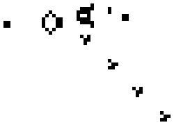
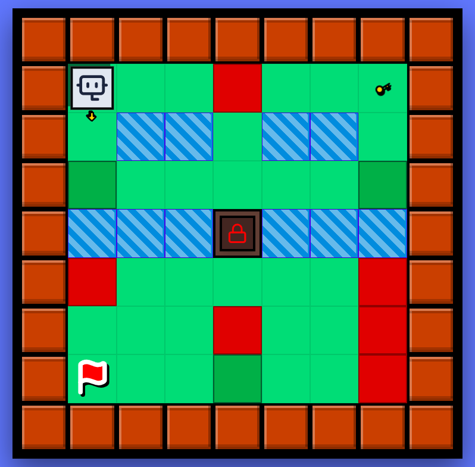

Nivell: Inicial | Duració: 1-2 hores
En aquesta activitat posareu a prova el vostre raonament lògic amb el joc Tents and Trees, on haureu de col·locar tendes de campanya al costat dels arbres en una graella seguint unes regles molt concretes. Per trobar la solució correcta, haureu de pensar de manera estratègica, eliminar opcions impossibles i comprovar les vostres hipòtesis.

Nivell: Inicial | Duració: 1-2 hores
En aquesta activitat, us convertireu en biòlegs digitals per desxifrar l'evolució del Joc de la Vida. A partir d'un escenari inicial, la vostra missió serà predir el futur de la colònia de cèl·lules aplicant les lleis de la naturalesa artificial que regeixen aquest món. Per trobar la configuració de la següent generació, haureu d'analitzar cada casella amb precisió, observar l'entorn de cada cèl·lula i aplicar el rigor lògic per decidir si la vida hi prosperarà, es mantindrà o desapareixerà.

Nivell: Mig | Duració: 2 hores
CodiAventura és un videojoc educatiu de trencaclosques dissenyat per introduir el pensament computacional i la lògica de programació de manera visual i interactiva. Els jugadors han de guiar un robot fins a la meta mitjançant la construcció d'algoritmes, utilitzant comandes de moviment, bucles i condicionals per superar obstacles com murs, aigua i portes tancades.